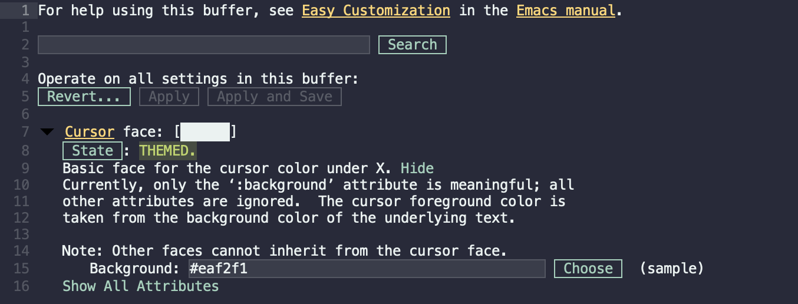

外观与主题
本文简单介绍一下如何为 Emacs 配置外观和主题，让 Emacs 成为一个赏心悦目的编辑器。
本文首先简要介绍 Emacs 外观的概念和手动配置方式，之后介绍一些其他人设计好的主题供读者选择。外观的配置每个人有每个人的偏好，本文只介绍基本的配置逻辑，具体选择什么样的配置读者可以自己拓展搜索。
初识配置 Face
Emacs 中掌管显示的专用名词是 Face，例如对文字来说，其字体、字号、颜色、背景都称为 Face。
想要配置 Face，输入命令 M-x customize-face 然后输入相应的 Face 名称即可自定义。那么如何知道 Face 的名称呢？在界面中输入 M-x list-faces-display 就可以显示当前界面下所有的 Face 的名字及颜色。例如，我们想更改光标的颜色，可以输入 "cursor"，就得到了类似下图所示的界面。

这里 “Cursor face:“ 后有一块白色的矩形，那便是笔者 Emacs 中光标方块的颜色。下面的 “State” 表示这个 Face 是被谁设置了，笔者使用了主题，光标颜色由主题指定，这里就显示 “THEMED”；读者如果从未配置，这里会显示 ”STANDARD“，即”标准“，也就是默认的标准颜色。再下面是一段对这个 Face 的介绍。最后是可以配置的属性（Attribute），属性有很多，但只展示配置过的属性，对于 Cursor 来说，主要就是背景颜色，所以这里显示了 “Background”。点 “Choose” 就会列出一系列颜色供用户选择。点 “Show All Attributes“ 可以列出所有属性，包括字体、字号、加粗、斜体等等（但正如介绍中所说，对 Cursor 来说别的属性没有意义，所以这里修改别的也是没用的）。最后，点上方的 “Apply”就是应用当前的设置预览效果，但不保存设置；点 ”Apply and Save“ 就是应用并保存了。
除了使用 M-x list-faces-display 列出当前界面所有的 Face 外，还可以使用快捷键 C-u C-x = 调用带前缀参数的 what-cursor-position 命令，它会在新的窗口中显示光标所在位置的界面信息，其中包括了 Face。
更通用的设置方式则是直接使用 Customization 进行搜索查找。强调一下，Customization 本身并不只包含关于 Face 的设置，各种变量都可以用它更改。进入 Customization 对首页可以输入命令 M-x customize ，可以点选其中的 “Face” 进入关于 Face 的设置，其中有罗列所有的 Face 分类。例如对于背景颜色这种设置，可以直接选 “Basic Faces“，里面的 “Default face” 的 “Background” 就是控制 Emacs 背景的属性了。读者当然也可以直接用搜索框直接搜索。
配置 Custom 文件
那么我们的自定义设置究竟是保存到了哪里呢？当读者保存了上述自定义配置后，默认会在你的初始化文件（如 ~/.emacs.d/init.el ）的末尾添加一段代码，类似：
1(custom-set-variables
2 ;; custom-set-variables was added by Custom.
3 ;; If you edit it by hand, you could mess it up, so be careful.
4 ;; Your init file should contain only one such instance.
5 ;; If there is more than one, they won't work right.
6 (custom-set-faces
7 ;; custom-set-faces was added by Custom.
8 ;; If you edit it by hand, you could mess it up, so be careful.
9 ;; Your init file should contain only one such instance.
10 ;; If there is more than one, they won't work right.
11 ; 一些 Face 配置
12 ))正如注释中所言，这段代码是由 Custom 系统自动维护的，读者轻易不要手动修改，否则会导致混乱。但是也可以看出，这里说到底也就是普通的 Emacs Lisp 代码，如果读者熟悉 Emacs Lisp，也不用对此非常畏惧。
部分读者可能会提出，Custom 如此修改初始化文件，把初始化文件弄的不美观了；或者如果用户有时候在本机使用图形界面 Emacs，有时候在服务器上使用命令行 Emacs，二者希望进行不同的 Custom 设置但又不想维护两组 Emacs 配置，该如何操作呢？
事实上，这段配置可以单独放在一个文件中，比如建一个 ~/.emacs.d/custom.el 文件，把上方的代码块完全剪切到其中，然后在配置文件如 ~/.emacs.d/init.el 中写入：
1(setq custom-file "~/.emacs.d/custom.el")
2(load custom-file)
这里设置变量 custom-file 改成我们自定义的文件名，然后加载这个文件，即可让 Custom 不再干扰我们的 ~/.emacs.d/init.el 文件，而把改动都写入 ~/.emacs.d/custom.el 。
读者更可以利用前面所学的模块化配置的方法，新建一个 ~/.emacs.d/lisp/init-theme.el 文件，把这两句代码写进去后，在 ~/.emacs.d/init.el 中 require 导入。
对于想要区分多个场景下的 Custom 配置，可以参考如下 init-theme.el 的配置：
1(setq custom-nw-file (expand-file-name "custom-nw.el" user-emacs-directory))
2(setq custom-gui-file (expand-file-name "custom-gui.el" user-emacs-directory))
3
4(if (display-graphic-p)
5 (progn
6 (setq custom-file custom-gui-file)
7 ; (add-to-list 'default-frame-alist '(ns-appearance . dark)) ; macOS 下让窗口使用暗色主题
8 ;; other settings
9 )
10 (progn
11 (setq custom-file custom-nw-file)
12 ;; other settings
13 ))
14
15(load custom-file)
如此在图形界面时使用 ~/.emacs.d/custom-gui.el 而在命令行时使用 ~/.emacs.d/custom-gui.el 。
配置主题
Emacs 的主题非常多，读者只需要在搜索引擎中搜索 “Emacs 主题”，或在国外搜索引擎中搜索 “Emacs themes” 就能得到非常多的结果。比较全的网站有 Emacs Themes Gallery 和 GitHub Topics：emacs-theme。
举个例子，笔者比较喜欢 Dracula 主题，通过 Gallery 网站找到 Dracula 的主页。其中写着只需要输入命令 M-x package-install <RET> dracula-theme 即可安装。随后在配置文件 ~/.emacs.d/init-themes.el 的合适位置写入：
1(load-theme 'dracula t)就可以使用 Dracula 主题了。
此外，笔者也非常喜欢 Doom Emacs 的主题，本教程虽然使用的是 Vanilla Emacs， 但也有插件把 Doom Emacs 的主题借鉴了过来。不仅如此，诸如 Atom、Monokai 也都有相应的实现，读者只需要寻找相应的主页进行安装即可。
在此分享一下笔者所使用的 Doom Emacs 主题，用到了 doom-themes
包，笔者选择了 doom-monokai-octagon 主题：
1(use-package doom-themes
2 :ensure t
3 :config
4 ;; Global settings (defaults)
5 (setq doom-themes-enable-bold nil ; if nil, bold is universally disabled
6 doom-themes-enable-italic t) ; if nil, italics is universally disabled
7 (load-theme 'doom-monokai-octagon t)
8 (doom-themes-treemacs-config))
doom-themes 中本身就有很多主题可选，读者可以根据喜好选择。 注意最好搭配下文的 all-the-icons 一同使用。
配置图标
图形界面的 Emacs 可以安装一个 [all-the-icons](https://github.com/domtronn/all-the- icons.el) 插件来为 Emacs 提供图标的支持，对于命令行 Emacs 来说如果终端能够支持这些图标字体，也是可以使用的。首先添加配置：
1(use-package all-the-icons
2 :if (display-graphic-p))
重启 Emacs 后安装字体： M-x all-the-icons-install-fonts 。
这些图标可以用在许多地方，例如自动补全框、文件列表等等，有些搭配相应的主题，如上文的 doom-themes 插件可以自动配置图标，其它可参考插件的 Wiki，读者可根据需要自行配置合适的图标。
mode-line
mode-line 的显示非常见仁见智，有的人喜欢花哨的，有的人喜欢简约的。笔者属于后者，所以没有配置很复杂的图形显示。mode-line 可以使用 powerline、spaceline 等。 powerline 在 zsh 里比较流行， spaceline 则是从 Spacemacs 衍生出来的。
这里再次提一下在插件：功能优化类里提及的插件 smart-mode-line 的额外配置。mode-line 由于会显示出当前的所有次模式（minor mode），很混乱，而 smart-mode-line 可以规整 mode-line， 但用起来还是会发现经常一些不太重要的 minor mode 被显示出来，重要的反而被排在了后面。这时候我们可以隐藏一部分 minor mode。
隐藏 minor mode 实际上是由另一个插件 rich-minority 来完成的，但安装了 smart-mode-line 之后已经被一起安装好了。还有一个类似功能的插件是 diminish，读者可以自行选择其中之一。
1(use-package smart-mode-line
2 :ensure t
3 :init
4 ; (setq sml/no-confirm-load-theme t) ; avoid asking when startup
5 (sml/setup)
6 :config
7 (setq rm-blacklist
8 (format "^ \\(%s\\)$"
9 (mapconcat #'identity
10 '("Projectile.*" "company.*" "Google"
11 "Undo-Tree" "counsel" "ivy" "yas" "WK")
12 "\\|"))))
相比之前，就是添加了一个 config，把一些不想被显示的 minor mode 加入黑名单。看起来有些复杂但其实读者无需关心细节，这里的 format 和 mapconcat 只是在做字符串操作，设法把用户罗列的 minor mode 名字拼接成一整个字符串。读者只需要修改其中的那个列表：
1'("Projectile.*" "company.*" "Google"
2 "Undo-Tree" "counsel" "ivy" "yas" "WK")
其中每个字符串可以是一个正则表达式，列出不希望显示在 mode-line 的 minor mode 名字即可。这里想要隐藏的分别是： projectile 、 company 、 google-this 、 undo-tree 、 counsel 、 ivy 、 yasnippet 和 which-key 。
不得不承认，对于图形显示来说，Doom Emacs 和 Spacemacs 有更为丰富的实践，本文的 Vanilla Emacs 需要向它们多多取经。读者也可以多关注一下两个发行版的优秀插件。